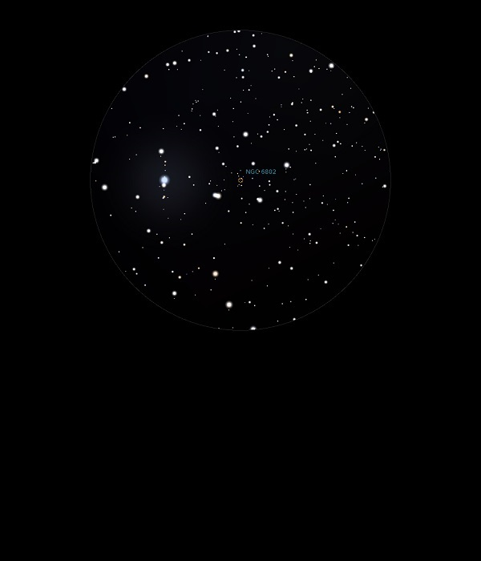

NGC 6802
Open Cluster in Vulpecular
NGC 6802
Mag 8.8
14/09/13
Open
Cluster, rather diffuse and insignificant
09/07/15
An Open Cluster which is more like a faint Galaxy, not
resolved in 18mm or 12mm
In 12mm it sits as a haze above a line between two sets of
close stars, the brightest and more separated at Mags 9.05 and
9.95 and the closer pair at Mags 9.80 and 11.30
7 Vul, HIP 95818 sits as a yellow Mag 6.30 star in the same
18mm and 12mm FOV and is the end of a line of 6 stars which
form the base of the asterism known as 'The Coathanger' very
neat and distinctive in finderscope even if it is upside down!
05/11/17
Just a hint of this Open Cluster in 8mm zoom, which sits at one
end of 'The Coathanger', an amazing asterism of similar
magnitudes, all around Mag 6